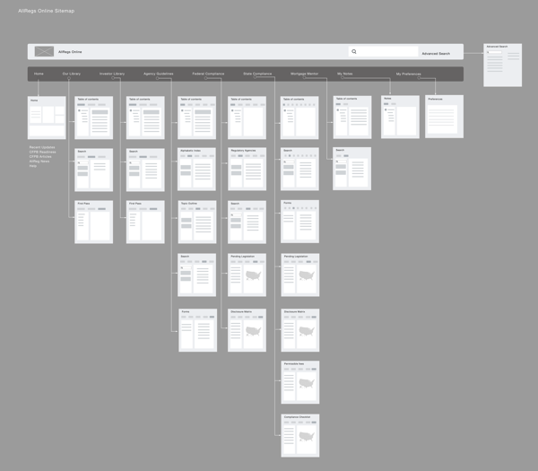
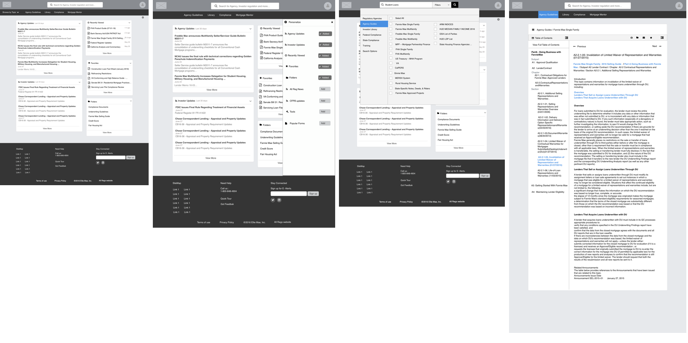
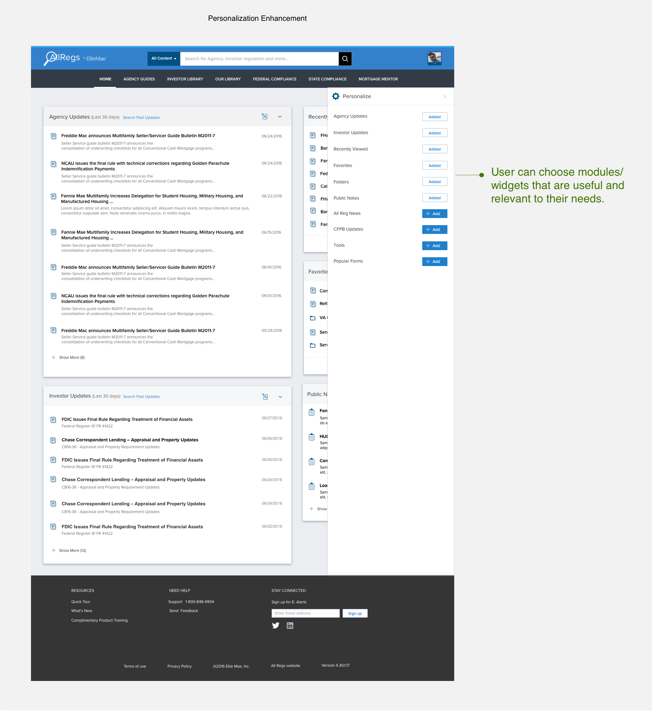
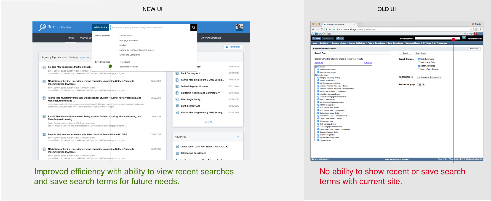
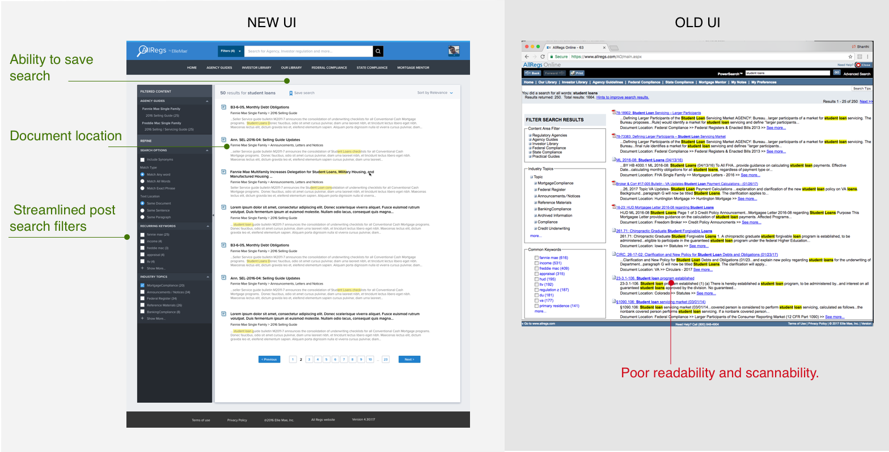
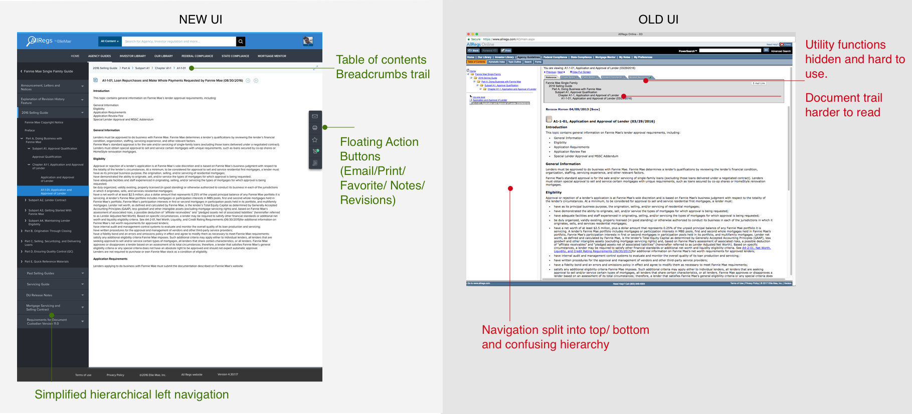
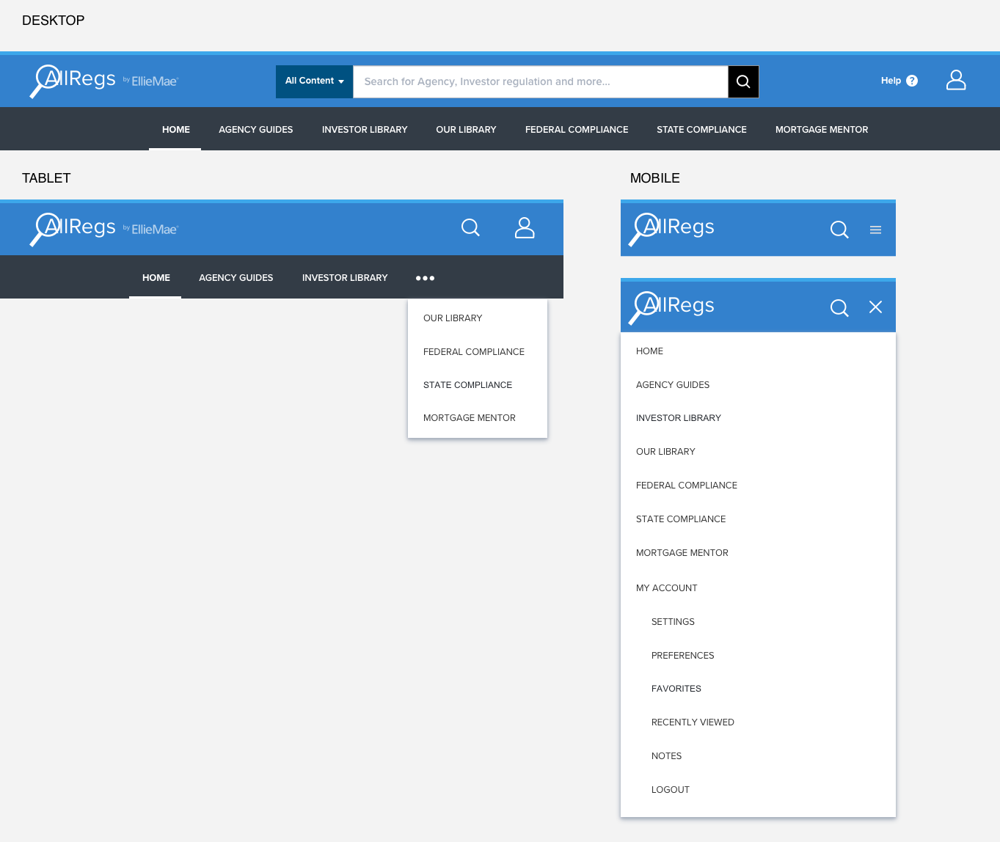
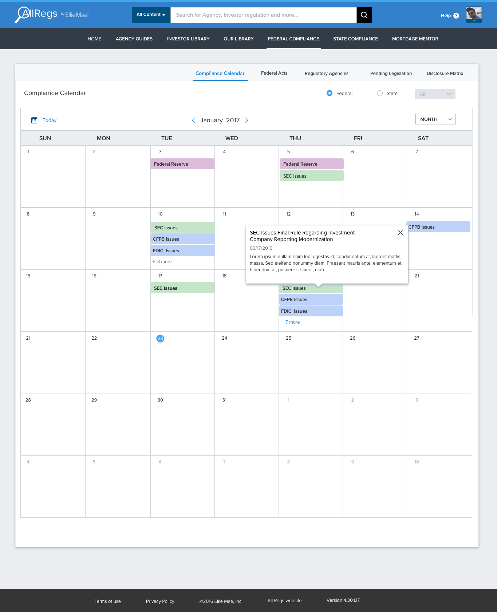
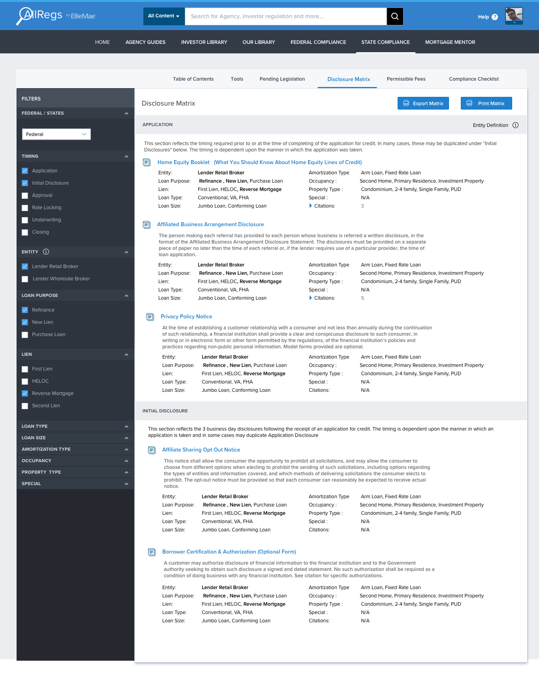

AllRegs
Responsive Design for Mortgage Information Provider Site
Background
AllRegs is the leading information provider for the mortgage industry, providing guidelines, compliance information, content and business intelligence for the mortgage lending industry. While it provides the most needed content for mortgage professionals, the site was very difficult to search and navigate for the required information. This caused user frustration and significant risk for renewal and subscription service.
Solution
Our approach was to redesign the search experience to easily find content, improve and extend the content viewing experience by shifting to a responsive design framework that can be device agnostic and completely revamp the UI with a fresh modern look and feel.
My Role
Design Leadership, Wireframing, Visual Design and Prototyping, Collaboration with product owners and engineering teams.
Our approach was broken down into 4 phases:
1. Evaluate the current website.
2. Understand the needs and pain points through surveys and user interviews.
3. Create wireframe concepts and rapid iteration with user feedback and stakeholders
4. Move into high fidelity and work with development team on specs and implementation
Key Challenges
1. Hard to Search - Searching for content is a primary task and this main functionality was the hardest to use.
2. Inefficient Search Results - Lack of filters and poor formatting of search results made search less efficient.
3. Inability to track documents - Users want to maintain a research trail and there was no ability to organize and save documents viewed.
4. Outdated Information - Users primarily want the latest information, but suffered information overload with intermingled old and new content.
5. Poor Readability - Site look and feel was outdated and the UI needed to be revamped for better readability and usability.
6. Lack of Personalization - Home page content was not relevant for most users and they wanted ability to customize it to their needs.
Site Map and Information Architecture
We mapped the existing site information architecture and found that the search feature was not integrated well. Several duplicate features was scattered through the site. Primary navigation needed to be refined and utility features needed to be moved under the user accounts section.

{kind=link}
Wireframe Iterations
Concept wireframes were tested to obtain end user feedback and further iterated to refine the solution.
Experience #1: Home Page
Improved the readability and usability with use of white space and removed visual clutter. Incorporated card based widgets that can adapt easily to responsive design. Ability to access frequently used content with Recently Viewed and Favorites.

Experience #2: Personalization
Incorporated the abilitiy to customize and personalize it to individual customer needs, a key feature that was requested in the customer interviews.

{kind=link}
Experience #3: Recent and Saved Searches
{kind=link}
Experience #4: Search - Filters

Experience #5: Search Results
{kind=link}
Experience #6: Table of Contents
{kind=link}
Desktop, Tablet and Mobile - Responsive Navigation
Based on the device context navigation adapts responsively. On larger screens shows full length navigation, medium sized shows partial navigation with dropdown and on small size navigation shows stacked.

{kind=link}
Final Designs
- 
- 
-

-

-

-

-

Outcome
Showcasing the responsive design and ability to view across multidevice with a modern user experience played a key role in getting customer wins for new subscription and renewal of existing subscription. Prototype and mockups were demoed to several customers and partners during conferences and workgroup meetings which served as a great selling tool.